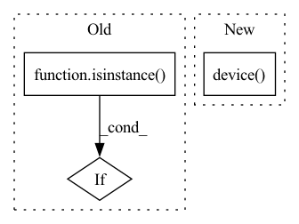

Pattern ID :23541
Before Change
output_idx = output_idx.index(name)
input_idx = partitions_config[dest]
if isinstance( input_idx, dict) :
input_idx = input_idx["inputs"].index(name)
else:
input_idx = input_idx.index(name)After Change
if cpu:
device = torch.device("cpu")
elif rank == input_rank:
device = torch.device( "cuda:0")
elif rank == output_rank:
device = torch.device(f"cuda:{input_rank-1}")
else:
device = torch.device(f"cuda:{rank}")In pattern: SUPERPATTERN
Frequency: 3
Non-data size: 3
Instances Fragment ID: 73790548
Project Name: saareliad/ftpipe
Commit Name: e685cf91e77538afa5f9c8b6ea3a61fcdcd96644
Time: 2019-12-09
Author: alondej@gmail.com
File Name: communication/GeneralCommHandler.py
M Class Name: AnonimousClass
N Class Name: AnonimousClass
M Method Name: createCommParams(5)
N Method Name: createCommParams(5)
M Parent Class:
N Parent Class:
M File Name: communication/GeneralCommHandler.py
N File Name: communication/GeneralCommHandler.py
M Start Line: 179
M End Line: 225
N Start Line: 171
N End Line: 229
Before Change
attempt_download(model_path) // download if not found locally
with yolov5_in_syspath():
model = torch.load(model_path, map_location=torch.device(device))
if isinstance( model, dict) :
model = model["model"] // load model
hub_model = Model(model.yaml) // create
msd = model.state_dict() // model state_dictAfter Change
// set device if not given
if device is None:
device = torch.device( "cuda:0" if torch.cuda.is_available() else "cpu")
elif type(device) is str:
device = torch.device(device)
model = DetectMultiBackend(model_path, device=device) Fragment ID: 73790557
Project Name: fcakyon/yolov5-pip
Commit Name: b0bac9868253d1bab90a3dca736e074e16c70602
Time: 2022-04-08
Author: 34196005+fcakyon@users.noreply.github.com
File Name: yolov5/helpers.py
M Class Name: AnonimousClass
N Class Name: AnonimousClass
M Method Name: load_model(4)
N Method Name: load_model(4)
M Parent Class:
N Parent Class:
M File Name: yolov5/helpers.py
N File Name: yolov5/helpers.py
M Start Line: 28
M End Line: 50
N Start Line: 28
N End Line: 41
Before Change
def __init__(self, config: Union[Dict, BaseOWAConfig]) -> None:
super().__init__()
if not isinstance( config, BaseOWAConfig) :
config = BaseOWAConfig.from_dict(config)
// Device selectionAfter Change
self.model_config = model_config
self.config = self.model_config.config
// Device selection
self.device = torch.device(
"cuda:0" if torch.cuda.is_available() and model_config.config(PREFERRED_DEVICE) else "cpu")
// Loss
self.margin_loss = self.config[MARGIN_LOSS]
self.criterion = nn.MarginRankingLoss( Fragment ID: 73790553
Project Name: pykeen/pykeen
Commit Name: 838445a0cd6a897148fdc24cb1cadd79628534ed
Time: 2019-05-02
Author: ali-mehdi@live.de
File Name: src/poem/kge_models/base_owa.py
M Class Name: BaseOWAModule
N Class Name: BaseOWAModule
M Method Name: __init__(2)
N Method Name: __init__(2)
M Parent Class: nn.Module
N Parent Class: nn.Module
M File Name: src/poem/kge_models/base_owa.py
N File Name: src/poem/kge_models/base_owa.py
M Start Line: 49
M End Line: 71
N Start Line: 25
N End Line: 47